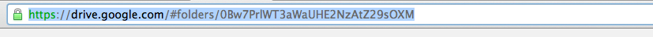
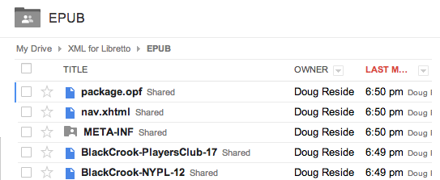
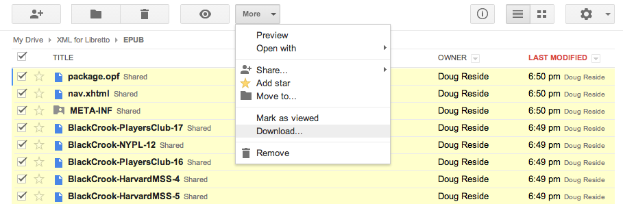
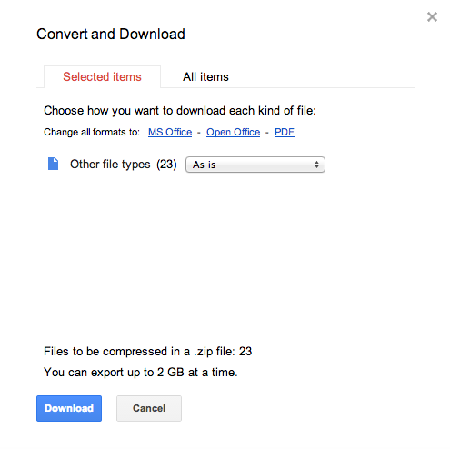

Follow the procedure below to create a synched variorum ePub edition from a set of TEI files. The resulting epub can be opened in most epub readers, but will benefit from the version syncing capabilities of Libretto (the mobile variorum reader from the New York Public Library for the Performing Arts).
Step one: First, upload all of the versions of your text as TEI files to a Google Drive folder. Note that each TEI file should include only ONE version (that is, it should not use the app/rdg tags). If you have used app/rdg tags, you can generate individual files through an XSL stylesheet that selects only one witness.
To the same directory, upload an XSL stylesheet to transform the TEI to HTML.
Now, copy the link to the Google Drive folder:
And paste it in the box below:
You can collate similar moments in different versions of the text using this tool. To begin, enter the name of the lowest level tag it makes sense to synchronize (for example: sp or p). You can also enter CSS-style paths (e.g. div[type=song])
Line up similar moments into the same rows.
When are are done, click this button:
You can divide the text into chapters or scenes. To begin, enter the tag or CSS-style path that indicates a significant division in the text. For example: div[type=scene] or div. You can also select the chapters manually by leaving the text box blank and just clicking Select
When you are completely finished, click the button below. A new folder containing all of your epub files will be added to your Google Drive folder you selected at the start.
Now you can download your epub file (which is just a zip file containing all of the files you just created). Google will zip the folder for you, but unfortunately, you'll have to go to the Drive App to do it. So follow this link:
https://drive.google.com/#folders/and select all of the files in the folder by clicking the top checkbox:
Then click on the "More" drop-down menu and select "Download"
A popup will appear giving you some download options. Just click the blue "Download" button.
After a few seconds, your ebook should download. Just rename the file with the extension ".epub " and you will have created an epub file that can be read with many readers, including Libretto!